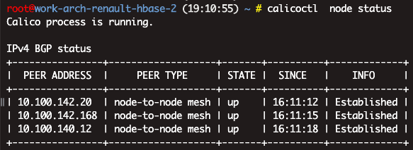
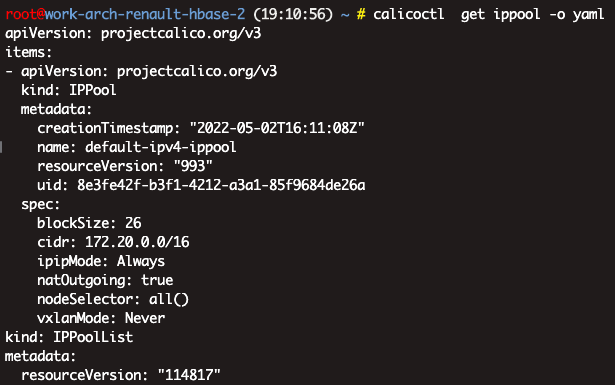
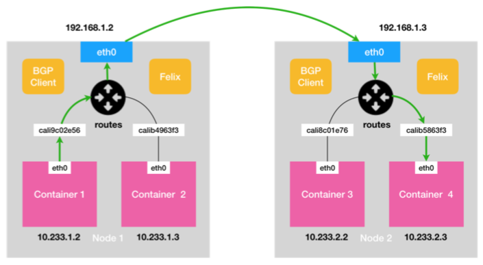
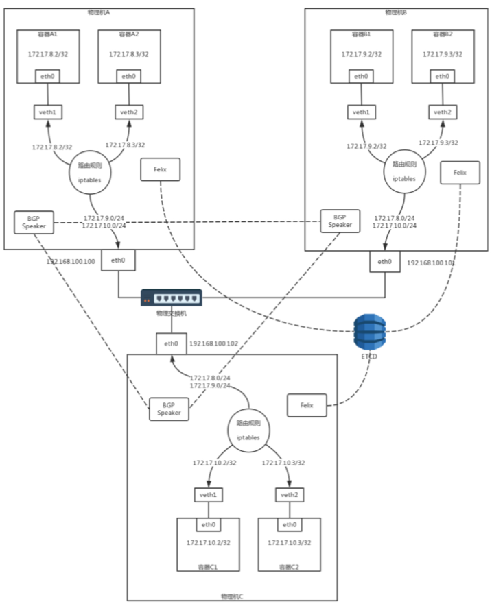
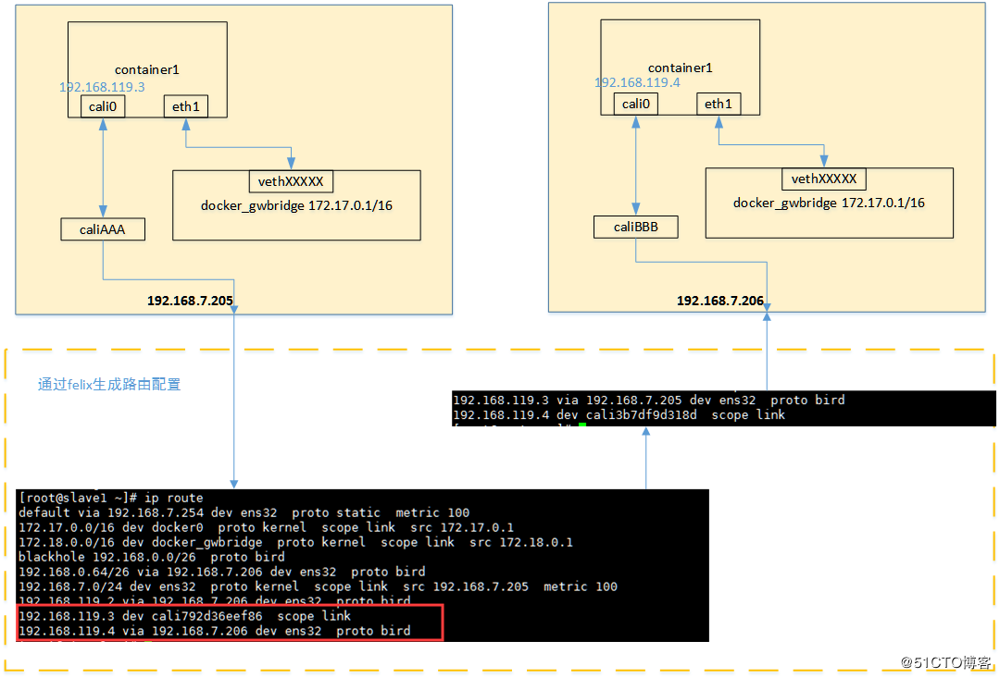
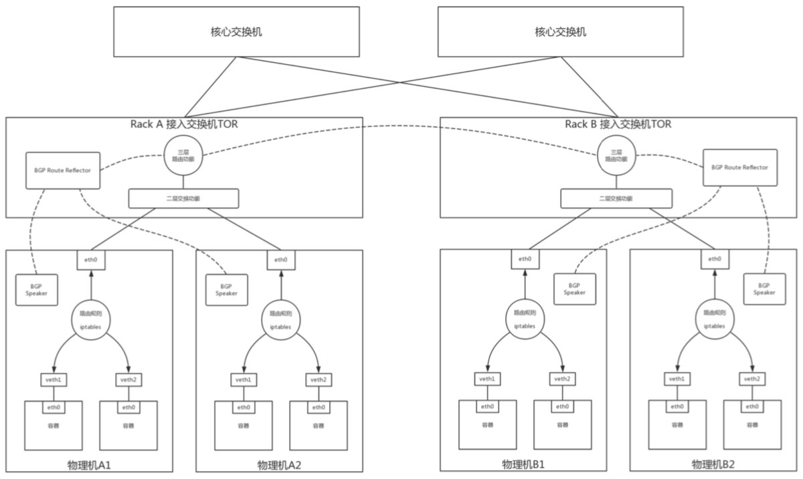

一. 介绍和原理 #
-
calico 是容器网络的又一种解决方案，和其他虚拟网络最大的不同是，它没有采用 overlay 网络做报文的转发，提供了纯 3 层的网络模型。三层通信模型表示每个容器都通过 IP 直接通信，中间通过路由转发找到对方。在这个过程中，容器所在的节点类似于传统的路由器，提供了路由查找的功能。
-
要想路由工作能够正常，每个虚拟路由器（容器所在的主机节点）必须有某种方法知道整个集群的路由信息，calico 采用的是 BGP 路由协议，全称是 Border Gateway Protocol。
-
BGP(Border Gateway Protocol 边界网关协议): 就是在大规模网络中实现节点路由信息共享的一种协议
BGP 协议传输的消息
+ 1 [BGP 消息]
+ 2 我是宿主机 192.168.1.3
+ 3 10.233.2.0/24 网段的容器都在我这里
+ 4 这些容器的下一跳地址是我
二. 组件 #
-
Calico 的 CNI 插件
-
Felix
它是一个 DaemonSet，负责在宿主机上插入路由规则(即:写入 Linux 内核的 FIB 转发信息库)，以及维护 Calico 所需的网络设备等工作。
- 路由规则(核心)
<目的容器 IP 地址段> via <网关的 IP 地址> dev eth0
- iptables的配置组件Felix; 基于iptable/linux kernel包转发; 根据iptables规则进行路由转发;
- BIRD， 路由广播组件BGP Speaker BIRD是 BGP 的客户端，专门负责在集群里分发路由规则信息。
三. 架构 #
1. Node-to-Node Mesh模式（小规模） #
- 默认配置下，是一个被称为“Node-to-Node Mesh”的模式，一般推荐用在少于 100 个节点的集群里 Node 称为 BGP Peer
  
- 非overlay, Calico 没有使用 CNI 的网桥模式;
宿主机 Node 2 上的 Container 4 对应的路由规则，如下所示:
10.233.2.3 dev cali5863f3 scope link
即:发往 10.233.2.3 的 IP 包，应该进入 cali5863f3 设备。


2. Route Reflector模式 + IPIP模式（大规模） #

默认情况下，每个 calico 节点会和集群中其他所有节点建立 BGP peer 连接，也就是说这是一个 O(n^2) 的增长趋势。在集群规模比较小的情况下，这种模式是可以接受的，但是当集群规模扩展到百个节点、甚至更多的时候，这样的连接数无疑会带来很大的负担。为了解决集群规模较大情况下 BGP client 连接数膨胀的问题，calico 引入了 RR（Router Reflector） 的功能。
RR 的基本思想是选择一部分节点（一个或者多个）作为 Global BGP Peer，它们和所有的其他节点互联来交换路由信息，其他的节点只需要和 Global BGP Peer 相连就行，不需要之间再两两连接。更多的组网模式也是支持的，不管怎么组网，最核心的思想就是所有的节点能获取到整个集群的路由信息。 
参考 #
-
《31容器网络之Calico：为高效说出善意的谎言》 趣谈网络协议 刘超
-
《35 解读Kubernetes三层网络方案》 深入剖析Kubernetes 张磊
-
容器网络Calico进阶实践 | 褚向阳 “看看 Calico 是如何实现跨主机互通”
-
Calico网络方案 安装
-
docker 容器网络方案：calico 网络模型 安装+原理 - 阿里人 - ”报文流程“
-
«kubernetes网络权威指南» 5.4节
-
Configure BGP peering 未 Full-mesh , Route reflectors
-
Overlay networking 未 公有云环境中（aws） ipipMode field (IP in IP encapsulation)， ipipMode 必须with BGP vxlanMode field (VXLAN encapsulation)， vxlanMode 可以without BGP 两种模式不能一起运行，只能运行其中的一种